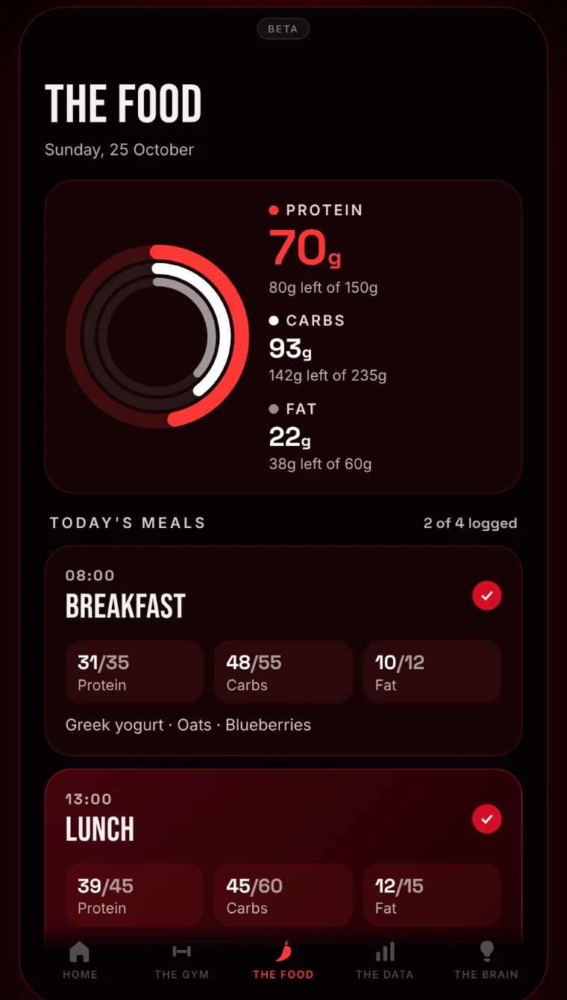
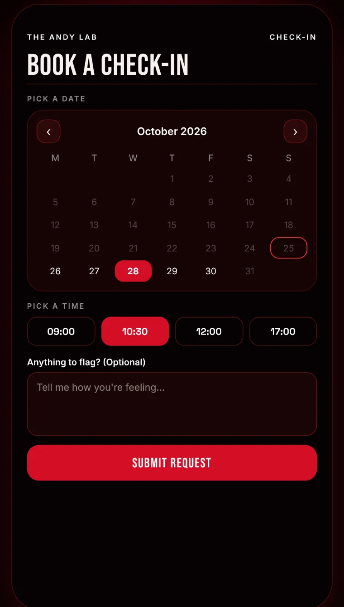
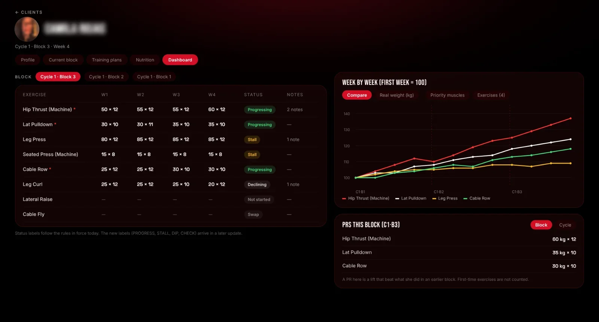

Hacerlo a ciegas, más. Aquí tendrás un plan hecho para ti, una app que te muestra tu progreso y a mí al otro lado, leyendo tus datos y ajustando tu plan.
Doing it blind is harder. Here you’ll have a plan made for you, an app that shows your progress, and me on the other side, reading your data and adjusting your plan.
Tu plan, tus series, tu comida y tus datos, en el móvil. Y yo del otro lado.
Your plan, your sets, your food and your data, on your phone. And me on the other side.
HOMETu día, de un vistazo.Your day, at a glance.
THE DATA¿Estás más fuerte? Arriba, igual o abajo, ejercicio por ejercicio.Are you getting stronger? Up, steady or down, lift by lift.

THE FOODApuntas lo que comes y la app te dice cuánto te queda.Log what you eat and the app tells you what's left.
CYCLE COMPLETEAl cerrar un ciclo, ves lo que construiste.Finish a cycle and see what you built.

CHECK-INReservas tu llamada conmigo desde la app.Book your call with me from the app.
Cada semana abro tu panel: qué sube, qué se estanca, qué baja, y las notas que me dejaste. De ahí salen los ajustes de tu plan.
Every week I open your panel: what's going up, what's stuck, what's dropping, and the notes you left me. That's where your plan adjustments come from.
Cada decisión viene con su porqué.
Every decision comes with its reasoning.

Mi panel de una clienta: cada ejercicio semana a semana, su estado y la curva del bloque.
My view of a client: every exercise week by week, its status and the block's curve.
Ver todo lo que incluye cada nivel →See everything each level includes →
Madrid, Londres, Hamburgo, Ámsterdam, Abu Dabi, México. Toca un punto para leer a las clientas de esa ciudad.
Madrid, London, Hamburg, Amsterdam, Abu Dhabi, Mexico. Tap a pin to read the clients in that city.
Programas genéricos hay muchos, todos están diseñados para la persona promedio.
There are plenty of generic programs, but they're all designed for the average person.
Y tú de promedio no tienes nada.
And you're anything but average.
Por eso existe The Andy Lab.
That’s why The Andy Lab exists.
"I finally just... go to the gym."
I'd been going to the gym on and off for years before working with Andrea. Having an actual program makes it so much easier to just show up, but what really changed things is how she thinks about behavior. She's helped me figure out how to fit healthier habits into my actual life, not some ideal version of it. It's not just about the workouts. It's how I eat, how I build routines, what's realistic for me. It adapts instead of fighting against how I actually live.
Sarah · Amsterdam
"Totalmente personalizado. Eso lo hace diferente."
"Fully personalized. That's what makes it different."
Me gusta esta propuesta de The Andy Lab porque se centra en la individualización, y no en lo masivo. Es totalmente personalizado y eso lo hace diferente. El componente de conocimiento, rigor y ejemplo que brinda Andrea como guía en el proceso generan confianza y despiertan un gran compromiso. Su plataforma es intuitiva y útil, lo que hace más agradable el entrenamiento.
What I like about The Andy Lab is that it focuses on the individual, not the masses. It's fully personalized and that's what makes it different. Andrea's knowledge, rigor, and the example she sets as a guide build trust and create real commitment. The platform is intuitive and useful, which makes training more enjoyable.
Juliana O. · Abu Dhabi
"Every session leaves me feeling stronger."
The training is challenging, engaging, and incredibly effective. Even when you're unable to do certain movements, Andy tweaks the program so you don't lose out. I can't recommend The Andy Lab enough!
Nicole R. · Hamburg
"I've literally never looked, or felt, better."
The Andy Lab has completely changed the way I see fitness as a way to feel stronger and healthier, rather than a way to stay 'small'. It's the first app I've tried that has helped me improve my nutrition without making me feel like I'm on a diet, and I've literally never looked (or felt!!) better. I recommend it to every woman I know.
Amy B. · London
"No sabía que iba a ser tan fácil engancharme."
"I didn't know it'd be so easy to get hooked."
Yo sabía que tener fuerza era esencial para mi salud. Lo que no sabía es que iba a ser tan fácil engancharme y ver resultados. ¡Gracias Andy por guiarme y siempre estar ahí!
I knew strength was essential for my health. What I didn't know was how easy it'd be to get hooked and see results. Thank you Andy for guiding me and always being there!
Laura G. · Madrid
"Ese odio a las pesas se puede cambiar."
"That hatred of weights can change."
Siempre me consideré deportista (correr, nadar, bici, pilates) pero las pesas siempre las vi con malos ojos. Hoy rindo mucho más en cardio, me siento más equilibrada, y todo empezó con un entrenamiento a mi medida. Soy una muestra fiel de que suma más de lo que uno cree.
I always looked down on weights. Today I perform much better in cardio, I feel more balanced, and it all started with a program tailored to me. I'm living proof it adds up more than you think.
Laura C. · Madrid
"El gran punto de inflexión."
"The turning point."
Trabajar con Andrea me ha permitido ver que tenemos cierta barrera las mujeres. Poder enfrentarme a las máquinas desconocidas y que me hicieran un programa a mi medida ha sido el gran punto de inflexión, Andreíta. Y ya si además me lleva a bailar, fenomenal.
Working with Andrea showed me the barriers we women carry. Facing unfamiliar machines with a program made for me was the real turning point.
Bea C. · Madrid
"Tenía miedo de ir al gimnasio. Ni un paso atrás."
"I was afraid of the gym. Not one step back."
Antes de comenzar el entrenamiento con Andy, tenía miedo de ir al gimnasio, sin ningún tipo de guía ni de formación. El plan individualizado y su cercanía me ayudaron a vencer ese miedo. Los vídeos explicativos son muy claros, y el plan de incremento de pesos te anima al ver el avance. La revisión de mi alimentación me ayudó a mejorar la distribución de nutrientes, tener mayor energía a lo largo del día y facilitar la construcción muscular. El proceso de cambio en mi cuerpo y los hábitos a largo plazo están siendo algo real.
Before training with Andy, I was afraid of the gym, with no guidance or training. The individualized plan and her closeness helped me overcome that fear. The explanatory videos are very clear, and the progressive weight plan motivates you as you see progress. The nutrition review helped me improve how I distribute nutrients, have more energy throughout the day, and build muscle. The changes in my body and the long-term habits are becoming something real.
Cecilia P. · Madrid
"Me ayudó a sentirme fuerte en el postparto."
"It helped me feel strong postpartum."
The Andy Lab me dio las herramientas para volver poco a poco a sentirme fuerte después de dar a luz. Tomar conciencia de mi cuerpo y su capacidad ha sido clave.
The Andy Lab gave me the tools to gradually feel strong again after giving birth. Becoming aware of my body and its capacity has been key.
Laura E. · Madrid
20 minutos, gratis. Me cuentas dónde estás y te digo si puedo ayudarte.
20 minutes, free. You tell me where you are and I tell you if I can help.